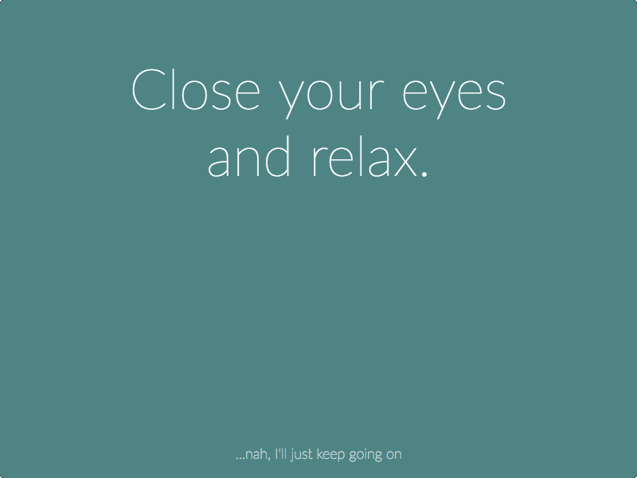

Introducing stretchly - break time reminder app
Posted under stretchly electron onMotivation
I work with computer more than 8 hours a day. And it's definitely not piece of cake: just look into my eyes…
Enter resting
Rest is a key component in ensuring the performance of the musculoskeletal system. Frequent breaks can decrease the duration of a task and help lower the exposure to ergonomic injury risk. 1
Right? But how do I make myself rest?
As it turns out, it's not that easy: I'll just write this, send that email, finish the idea…. We've all been there.
stretchly
To remind myself to take breaks, I created stretchly - break time reminder app.
Right now (v0.0.1) it's showing reminder every 10 minutes that is open for 20 seconds and contains random break idea:

Some of the other ides are:
Stand from chair and stretch.
Refocus eyes on an object at least 20 meters away.
Take a moment to think about something you appreciate.
It runs in your tray and you can pause/resume breaks.
Future
As you can say by version, stretchly is far from 1.0 and there is lot of work to do.
I already have some ideas what to do next:
- longer breaks every 30 minutes
- color schemes
- app autostart and hotkeys
- setting and config
To make it even more interesting, I was thinking about some mechanism to check how many breaks you skipped and be more offensive in making you to take one.
I desperately need that.
And I need your help
This release is kind of alfa. I am trying to set-up stage for further development, so it would be awesome if you could help me with testing. On my mac it seems to work fine, but hard to say about Linux, Win or FreeBSD. You can download it here.
If you could try and let me know the results (here, or on github), that would be very helpful.
Thanks!
Did you enjoy this? Copy-paste the link from the address bar to your favourite social network to share. Subscribe here.
comments powered by Disqus